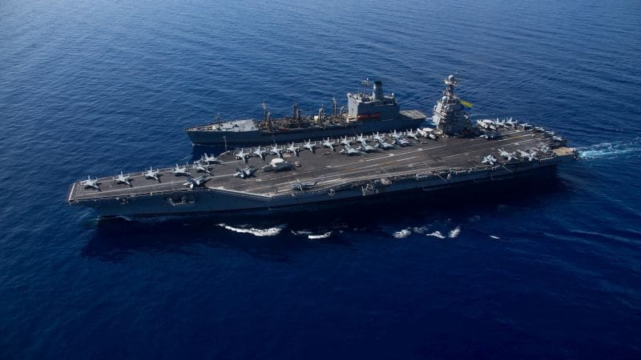

世界苦茶10月25日新闻 | 29条 | 中国设立所谓“台湾光复纪念日”

中国设立所谓“台湾光复纪念日” | 德国外长突然推迟访华 | 美国通胀回升至3%但低于预期 | 俄罗斯将在高通胀下降息 | 美国将航母战斗群派往加勒比海
苦茶数据
美元兑人民币：7.12（昨日7.12，前日7.12）
美元兑日元：152.78（昨日152.99，前日152.54）
上证指数：休市（昨日3950，前日3888）
标普500指数：休市（昨日6791，前日6738）
比特币：111296（昨日111391，前日108444）
布伦特原油：65.94（昨日65.73，前日64.36）
中国新闻
• 香港唯一非建制议员狄志远告别议会。
香港12月初将举行新一届立法会选举，20多名现任议员半个月来先后宣布不竞逐连任，当中不乏具有一定知名度的老将，掀起了全城热议。来自社会福利界别的议员狄志远弃选，尤其引起许多人高度关注。68岁的狄志远是一名社工，早在上世纪80年代就从政，于1985年加入民主党的前身——汇点，多次参加区议会选举，不过皆未能当选。到了1991年立法局选举，他在新界北选区夺得逾2万张选票，终于成为立法局议员，首次进入议会。狄志远一直被视为民主派中的温和人士，在香港政制发展的问题上和民主派有不同看法。（翻评：香港立法权已死，当然可能早就死了。）
• 港澳办：选举不容干扰破坏 须警惕反中乱港势力卷土重来。
香港立法会换届选举在即，中共中央港澳工作办公室、中国国务院港澳事务办公室发文称，反中乱港势力从未停止对选举的干扰破坏，必须警惕它卷土重来。港澳办星期五在微信公号发表题为《选举不容干扰破坏》的文章称，香港特区第八届立法会选举提名期当天展开，称赞第七届立法会一些议员为推动爱国爱港力量新老交替、薪火相传而放弃竞逐连任，“表现出高风亮节”。文章也指出，人们仍需警惕反中乱港分子和外部势力贼心未死，还在蠢蠢欲动。
• 巩固国际社会一个中国格局 北京决定设立台湾光复纪念日。
台湾光复80周年纪念日前夕，中国全国人民代表大会常委会星期五通过决定，以法律形式将10月25日设立为台湾光复纪念日。据新华社报道，中国全国人大常委会星期五在北京举行会议，表决通过了上述决定。根据决定，在台湾光复纪念日，中国大陆将通过多种形式举行纪念活动。决定指出，台湾光复是中国人民抗日战争胜利的重要成果，是中国政府恢复对台湾行使主权的重要铁证，是台湾作为中国一部分的历史事实和法理链条的重要一环，是两岸同胞的共同荣光和全体中华儿女的民族记忆。中国全国人大常委会法制工作委员会主任沈春耀说，设立台湾光复纪念日，在国家层面举行纪念活动，有利于体现台湾是中国不可分割一部分这一无可辩驳的历史事实。（翻评：占便宜吃豆腐，塔渣一体。）
• 美国参议员呼吁特朗普在会见习近平时表明对黎智英的支持。
美国参议员呼吁特朗普在重要会晤中向习近平提出对黎智英的关切 由两党共38名美国参议员签署的致总统信，敦促总统确保黎智英获释并将人权重新纳入议程。“他已78岁，健康状况很差且正在恶化。他患有糖尿病并有多种身体疾病，而这些因他持续被监禁而加重，”信中写道。“黎先生的代理人已向我们保证，如果他获释，他将离开香港并永不返回。他也无意继续从事公众事务。另一方面，如果他在狱中去世，他将成为烈士；成为反对派的强大且持久的象征。
• 李强将访新加坡，正值中国寻求巩固双边关系之际。
李强总理将访问新加坡，中国寻求巩固关系 他是自2018年以来首位访问该城邦的中国领导人，此次出访正值北京与华盛顿竞争加剧之际，李强总理将于周六抵达新加坡，展开为期两天的访问。中国外交部表示，此行旨在深化合作并重申对多边主义的共同承诺。部门于周五证实了此行，称此时正值两国庆祝建交35周年之际，具有关键意义。外交部发言人郭佳昆说：「中国希望通过此访与新加坡在各领域深化合作，在国际和地区事务上保持密切沟通与合作，共同维护多边主义和自由贸易。」 他说李强还将于周一前往马来西亚首都吉隆坡出席东南亚国家联盟会议。
• 涉嫌在多益考试中招募代考的中国男子在日被捕。
围绕测试英语能力的民间考试「多益」的在日本发生的作弊事件，东京警视厅国际犯罪对策课10月23日发布消息称，以涉嫌伪造和使用盖章私人文书为由，逮捕了中国籍的职业不详的嫌疑人李照北。该嫌疑人被认为是招募负责代替解答试题的京都大学男性研究生的中间人。该课透露，嫌疑人李某招募了中国籍的京都大学研究生，并支付了报酬。据称，被招募的研究生以他人名义参加考试，并通过小型麦克风向其他考生传递答案。李某被逮捕的罪名是涉嫌3月与研究生合谋，在东京都练马区的考场伪造并使用准考证。
• 德国外长推迟访华，引发外交震荡。
德国外长约翰·瓦德普尔周五推迟了原定的访华行程，理由是日程上缺少会见安排。“此次出访目前无法成行，将推迟到以后进行，”德国联邦外交部一名发言人表示。发言人补充称，除了与中国外长王毅的一次会晤外，他的日程中与北京方面的会面数量不足。瓦德普尔的这一决定可能会搅动柏林与北京的关系。近年来，因北京对稀土和芯片等的出口管制，以及德国对中国在台湾问题和南海行为的批评，德中关系在最近几个月日益恶化。
印太新闻
• 高市早苗：有必要构筑与中国的稳定关系。
日本首相高市早苗10月24日在众议院全体会议上发表了就任后的首次施政演说。她表示，「要让日本列岛更强大、更富裕」，将推进经济复兴与强化安全保障。鉴于执政党在众参两院均处于少数派的局面，高市早苗同时表达了愿与在野党展开对话的意愿。在外交与安全保障方面，高市早苗引用前首相安倍晋三的话强调，「重拾在世界中心盛放的日本外交」。并表示将以日美同盟为核心，继续推进「自由开放的印度太平洋」构想。高市早苗称中国是「重要邻国」，表示「有必要构筑建设性且稳定的关系」。
• 富士山初雪降临披上银装。
日本甲府地方气象台10月23日宣布，观测到了富士山的首场降雪。2025年的首场降雪比往年平均时间晚了21天，比1894年开始观测以来最晚下雪的2024年早了15天。工作人员从距离富士山约40公里的甲府市内气象台进行了目视确认。
• 巴基斯坦取缔了以对亵渎罪采取强硬立场而闻名的极端伊斯兰政党。
在与警方发生激烈冲突、至少造成五人死亡一周多后，巴基斯坦周四禁止了一个极端伊斯兰党派。本次禁令出台缘于该党本月早些时候从东部城市拉合尔向首都伊斯兰堡发起的游行。游行在拉合尔及临近的穆尔迪凯市演变为TLP支持者与警方之间的惨烈街头冲突，随后对该党展开了打击，该党以这些暴力对抗而闻名。巴基斯坦总理谢里夫办公厅发布的声明称，联邦内阁一致批准了禁令，理由是“暴力和恐怖活动”。此次禁令是巴基斯坦国家与TLP之间复杂关系的最新一幕。近年来，TLP因其强硬立场，尤其在亵渎罪和侮辱伊斯兰问题上，积累了相当的草根支持。
科技新闻
• 欧盟指控Meta和TikTok违反数字法规。
欧盟委员会周五指控Meta和抖音违反了该集团具有里程碑意义的社交媒体法规。欧盟执行机构表示，Meta旗下的Facebook和Instagram以及抖音均未履行向研究人员提供平台数据访问的义务。该机构称，这两款Meta平台在赋予用户标记非法内容和对审核决定提出异议的三项义务上也未达标。根据《数字服务法》，这些平台现在有权对欧盟委员会的指控作出回应。如果未能说服欧盟执行机构，可能面临高达全球年收入6%的罚款。
• 华为的太阳能技术引发对欧洲下一轮依赖危机的担忧。
先是电信监听，如今欧洲越来越担心华为会切断电源。这家中国科技巨头正处于围绕欧洲能源电网安全的风暴中心。多位立法者正在给欧盟委员会写信，敦促其“限制高风险供应商”参与太阳能系统建设——该信件被POLITICO看到。此类限制首先将针对华为，因为它是这些系统关键部件的主导中国供应商。担忧集中在太阳能板逆变器上，这种技术把太阳能板产生的电力转换为注入电网的电流。中国在这些逆变器供应上占主导地位，华为是其中最大的参与者。由于逆变器连接互联网，安全专家警告称，逆变器可能通过远程访问被篡改或关闭，从而可能在欧洲电网中引发危险的电压突增或骤降。
经济新闻
• 欧盟企业称形势正在好转，唯独法国例外。
欧洲企业普遍认为局势在好转——唯独法国例外，该国持续的政治动荡继续对经济造成冲击。采购经理人指数的初值——这一广受关注的商业状况指标——显示欧元区服务业和制造业的感知均在改善，服务业领跑。新数据的主要异常是法国，该国的总体指标下滑至自二月以来的最低水平。服务业也在下滑，即便制造业表面上回升，“也掩盖了产出下降”，汇丰银行欧元区首席经济学家克里斯·黑尔在一份报告中表示。
• 美国通胀率回升至3%。
上个月美国的生活成本进一步上升，价格以今年以来最快的速度上涨。根据劳工统计局周五发布的数据，9月消费者价格上涨0.3%，将年度通胀率从2.9%推高至3%，为自今年1月以来的最高水平。劳工统计局数据显示，汽油价格是本月涨幅的最大罪魁祸首，整体上涨4.1%，普通无铅汽油上涨4.2%。食品价格的上涨幅度比8月更为温和，与住房相关的通胀也继续长期放缓。经济学家预计通胀将继续加速，按FactSet的估计，9月环比将上涨0.4%，同比为3.1%。剔除波动较大的食品和能源后，核心CPI在9月上涨0.2%，年化通胀率为3%。尽管好于经济学家的预期，但周五的通胀数据令人不安地提醒人们。
• 中美第五轮贸易谈判 中方尚未证实特习会。
美中代表团周五将在马来西亚启动新一轮贸易谈判。与此同时，特朗普将启程访问马来西亚、日本和韩国。尽管白宫宣布，特朗普将与习近平在韩国会晤，但中国外交部尚未证实此一消息。美中再次举行贸易谈判之际，中国商务部长王文涛表示，中国国家主席习近平强调，对话和合作是中美“唯一正确的选择”。本周五，王文涛在中共四中全会新闻发布会上表示，中美前4轮经贸谈判显示，双方“在相互尊重、平等协商基础上，完全可以找到解决彼此关切的办法”。本周五，中美代表将抵达马来西亚开启第5轮谈判。中方代表团由副总理何立峰率领，美方由财长贝森特领衔。
• 中国C919客机制造商将赴迪拜航展物色中东买家。
中国商飞将亮相迪拜航展，物色中东买家 中国商用飞机制造商将于下月首次参加迪拜航展，届时可能在中东地区寻觅其小型C909和窄体C919客机的潜在买家。主办方网站将中国商用飞机有限责任公司列为约1500家参展商之一。分析师称，这家总部位于上海、国有的飞机制造商将于11月17日至21日首次出现在该活动。在中国订单增长后，商飞一直在为其较早、更小的C909以及更新的单通道C919飞机寻找海外买家。如果海外销售取得突破，将有助于商飞实现其打破空客—波音在客机市场双寡头地位的目标。
• 美国将对中国履行2020年贸易协议情况启动调查。
美国将对中国履行2020年贸易协议情况启动调查 据两名知情人士透露，特朗普政府计划针对中国未能履行其第一任期内签署的贸易协议条款发起贸易调查。此举可能导致美国对中国加征更多关税，并进一步加剧两国紧张关系。当前中美这两个全球最大经济体的关系已紧张数周，美方此举或意在下周特朗普与中国国家主席习近平会面之前积累谈判筹码。该调查最早可能于周五宣布，将由美国贸易代表办公室依据1974年《贸易法》第301条款发起。该条款允许美国政府调查其他国家的贸易行为是否对美国造成损害。尽管尚未作出最终决定，但此次调查可能为美国对中国进口商品加征更多关税铺平道路。
• 川普关税实施半年，中日欧对美顺差均减少。
美国川普政府的高关税政策启动已有半年，日本的对美贸易顺差的缩小日益明显。日本财务省的贸易统计速报显示，2025年度上半年度对美顺差同比减少22.6%，降至3万3222亿日元。尽管日美达成协定，实现了关税下调，但以支柱产业汽车为中心的影响仍很大。美国总统川普将美国的贸易逆差视为问题，4月开始向日本征收24%的对等关税和25%的汽车关税。虽然经过日美谈判，均降至15%，但仍处于较高水准。日本上半年的对美出口减少10.2%，降至9万7115亿日元。
俄乌战争
**• 据匿名消息人士，美国务卿鲁比奥是特朗普政府突然转变对俄谈判立场、实施重大制裁的主要推手。 **
为筹备布达佩斯俄美元首峰会，鲁比奥与俄外长拉夫罗夫作准备通话并拟举行准备会谈。但认定俄又一次拖延谈判后，鲁比奥取消了与拉夫罗夫的会谈。被认为对俄温和的美中东特使威特科夫主导了八月阿拉斯加峰会前的筹备过程。但他在克宫与普京和其他俄高官的会谈造成了一定误解，使美方误判俄方让步立场。阿拉斯加会谈气氛紧张，普京坚持乌必须割让领土，特朗普一度威胁中途离场。俄方近期向美方重申了一系列既有条件。特普两人16日通话后，俄方认为美方同意了要求乌放弃顿巴斯地区、换取俄小部分领土让步的条件。但特朗普在随后与泽连斯基的会谈中同意以现有控制线停火的方案，而这一停火条件早在阿拉斯加峰会前就被俄方拒绝。拉夫罗夫在与鲁比奥通话时强调了俄美在这一点上的分歧。一智库学者评论：“美方在阿拉斯加峰会上才意识到俄立场顽固；这次在（布达佩斯）峰会前意识到，是好事。”（翻評：終於幹了一件人事兒，印太戰略再好好推一推。）
• 俄罗斯央行试图通过降息支撑疲弱的经济。
俄罗斯联邦中央银行今日下调关键利率，并大幅下调对2025年经济增长的预测，因为该国经济正受到高通胀与广泛的西方制裁的双重冲击。此举此前美国对其两大石油供应商俄罗斯石油和卢克石油实施了制裁。石油和天然气约占俄罗斯国内生产总值的五分之一。该行更新展望，预计2025年经济增长将在0.5%至1%之间，低于此前的1%至2%。尽管预计明年通胀将回升至4%至5%，但其仍将关键利率下调0.5个百分点，至16.5%。（翻評：這說明俄羅斯的經濟真的要完蛋了。）
• 匈牙利总理欧尔班誓言“规避”美国对俄罗斯石油巨头的制裁。
匈牙利总理维克多·欧尔班周五表示，布达佩斯正在研究如何“规避”美国对俄罗斯石油和天然气公司的制裁。美国总统唐纳德·特朗普周三宣布，对俄罗斯跨国公司卢克石油和国有的俄罗斯石油实施“重大”新制裁，这是他上任以来首次采取此类措施。虽然具体细节仍在确定，但这些制裁可能迫使莫斯科切断通往欧洲的剩余石油管道——这对大部分供应来自俄罗斯的匈牙利来说是个坏消息。
• 因比利时反对 欧盟暂缓批准动用俄罗斯冻结资产的援乌计划。
欧盟暂缓动用俄罗斯冻结资产进行援乌 2025年10月24日欧盟领导人同意将在未来两年内继续向乌克兰提供“迫切的资金”，但由于比利时干预，欧盟未能批准一项动用冻结的俄罗斯资产为基辅提供巨额贷款的计划。比利时的立场至关重要，因为比利时金融机构欧洲清算银行持有大部分被冻结的俄罗斯资产。欧盟希望使用这笔款项向乌克兰提供1400亿欧元的贷款。自2022年俄乌战争爆发以来，欧盟及其盟友冻结了约3000亿美元的俄罗斯海外资产，其中约2000亿欧元存放在比利时的欧洲清算银行。按照欧盟方面的解释，欧盟不会没收这些资金。
• 特朗普做到布鲁塞尔做不到的事：在欧洲扼杀俄罗斯石油。
唐纳德·特朗普出人意料地对俄罗斯最大石油公司实施制裁，这一举措不会使弗拉基米尔·普京的战争机器瘫痪——但将有助于欧盟彻底将俄罗斯石油逐出欧盟。周三，特朗普宣布对俄罗斯卢克石油和国有的俄罗斯石油公司实施“巨大的”新制裁，这标志着他上任以来对莫斯科实施的首批美国制裁。新措施的细节仍在制定中。但理论上，这些制裁可能迫使两家公司出售资产并终止其剩余的向欧洲经管道供应的石油。
世界新闻
• 美国在加大军事存在之际，派出全球最大军舰驶向加勒比海。
美国正在向加勒比海部署世界上最大的军舰，此举标志着其在该地区军事集结的重大升级。国防部长皮特·赫格塞斯周五下令将可搭载多达90架飞机的“杰拉尔德·R·福特”号航母从地中海调往该地区。近年来，美国在加勒比海不断增强军事部署，派遣了其他军舰、一艘核潜艇以及F-35战机，称此举旨在打击贩毒分子。美方已对其认定为贩毒者的船只实施了十次空袭，包括周五的一次空袭，赫格塞斯称“六名男性毒贩恐怖分子”在此次行动中被击毙。该次行动发生在加勒比海，目标据称属于“阿拉瓜列车”犯罪组织的船只。这些空袭在该地区引发谴责。
• 军舰、战斗机和中央情报局——特朗普在委内瑞拉的最终目的是什么。
军舰，战斗机与中情局——特朗普在委内瑞拉的最终目的是什么？两个月来，美国军方在加勒比海集结了军舰，战机，轰炸机，海军陆战队，无人机和侦察机，这是数十年来该地区规模最大的部署。远程轰炸机B-52曾在委内瑞拉海岸附近进行“轰炸机攻击示范”。特朗普已授权将中央情报局部署到委内瑞拉，全球最大的航空母舰也正被派往该地区。美国表示，它在针对来自委内瑞拉的小型船只的空袭中已击毙数十人，称这些船只运载“毒品”和“毒贩恐怖分子”，但未提供证据或关于船上人员的详细信息。该等空袭在该地区引发谴责，专家也质疑其合法性。美国将其包装为反毒品走私战争，但所有迹象表明，这实际上是一场恐吓行动。
• 巴西的卢拉将竞选第四个总统任期。
路易斯·伊纳西奥·卢拉·达席尔瓦宣布将竞选第四个巴西总统任期，这位79岁的总统表示他将参加2026年的总统选举。卢拉在上次竞选时曾暗示那将是他的最后一届，但他在周四对印度尼西亚的国事访问中表示并不觉得自己老了。“我快80岁了，但你们可以肯定，我有着和30岁时一样的精力。我将在巴西竞选第四个任期，”卢拉对记者说。尽管在任内曾出现健康问题，卢拉仍决定参选。去年12月就职时他已是巴西历史上最年长的总统，后来在总统府摔倒导致头部受击并出现脑出血，他接受了手术治疗。2022年，这位左翼领导人在历史上最势均力敌的决选中以51%比49%击败时任总统雅伊尔·博索纳罗。右翼前总统博索纳罗现正服刑27年。
• 美国对左翼哥伦比亚总统佩特罗实施制裁。
美国已对哥伦比亚左翼总统古斯塔沃·佩特罗实施制裁，指控其未能遏制贩毒活动。美国财政部长斯科特·贝森特在一份声明中表示：“佩特罗总统允许贩毒集团繁荣，并拒绝制止这一活动。” 制裁还包括对哥伦比亚内政部长阿曼多·贝内德蒂以及佩特罗的妻子和大儿子实施，禁止他们接触可能在美国拥有的资产和房产。曾几何时，哥伦比亚是华盛顿禁毒战争的亲密盟友，每年获得数亿美元的军事援助。但自特朗普重返政坛以来，佩特罗与特朗普频繁发生冲突。贝森特称，自这位前游击队员上台以来，哥伦比亚的可卡因产量“激增至数十年来的最高水平，淹没美国并毒害美国人”。他补充称，特朗普正在采取“强有力的行动”。（翻評：瞎NM折騰，把力量都放在加勒比海而不是印太。）
• 特朗普取消向旧金山部署联邦部队计划。
特朗普周四表示，他已在英伟达首席执行官黄仁勋和Salesforce创始人马克·贝尼奥夫的劝阻下，取消了向旧金山部署联邦特工的计划。美国总统特朗普表示，联邦政府原定于周六 “向旧金山增援”，但在接到硅谷巨头的来电并与该市的美国民主党籍市长丹尼尔·卢里交谈后，他取消了该计划。特朗普通过真相社交写道：“黄仁勋、马克•贝尼奥夫等伟大人物都打来电话，说旧金山的未来一片光明。他们想给它一个 ‘机会’ 。因此，我们不会对旧金山 ‘加码’。”今年六月，特朗普向洛杉矶派遣联邦军队以平息针对大规模驱逐出境的抗议活动。此后数月里，他还在其他倾向民主党的地区部署了国民警卫队。